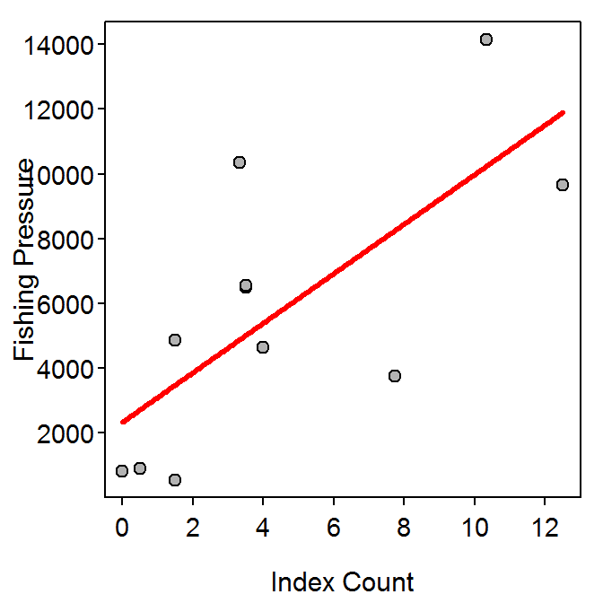

Equation of the Line I
- Dishwasher Example
- response - Height of suds (mm)
- explanatory - Amount of soap (g)
- slope is 12.4
- intercept is -20.2
- For each additional gram of soap, the height of sudes increases by 12.4 mm, on average.
- For 0 grams of soap, the height of suds is -20.2 mm, on average. [This is an extrapolation.]
- Ask to predict height of suds for an amount of soap between 3.5 and 8.0 grams. Example … “What is the predicted height of suds for 5 g of soap?” Answer … -20.2+12.4*5=41.8 mm.
- Ask to predict height of sudes for an amount of soap not between 3.5 and 8.0 grams. Example … “What is the predicted height of suds for 10 g of soap?”
- Livestock Food Example
- response - Costs
- explanatory - Livestock food mix in pounds
- Slope is 190.
- Intercept is 12075
- For each additional ton of the food mix, the cost increases by $190, on average.
- For 0 tons of the food mix, the costs are $12075, on average. [This may be considered as “start-up” costs.]
- Ask to predict costs for food mix amounts between 36.5 and 42 tons. Example … “What is the cost to make 40 tons of the mix?” Answer … 190*40+12075 = $19675.
- Ask to predict costs for food mix amounts not between 36.5 and 42 tons. Example … “What is the cost to make 70 tons of the mix?”
Beach Sand
- The equation of the best-fit line is SAND = 0.159+0.053*ANGLE
- For each 1 degree increase in beach angle, the median sand diameter increases by 0.053 mm, on average.
- If there is 0 beach angle, then the median sand diameter is 0.159 mm, on average.
- This prediction should not be computed, because 15 degrees of beach angle is outside of the domain of the data used to define the relationship (i.e., this is an extrapolation).
- The predicted median sand diameter for a beach angle of 4 degrees is 0.371 mm.
- The residual for an observed median sand diamter of 0.2 mm and beach angle of 5 degrees is -0.224 mm.
- The correlation coefficient between median sand diameter and beach angle is 0.955.
- The proportion of variabiilty in median sand diameter that is explained by knowing the angle of the beach is 0.912.
- I would expect the median sand diameter to increase by four slopes or 0.212 mm, on average, if the beach angle increased by 4 degrees.
- The relationship betwen median sand diameter and beach angle appears to be nonlinear.
Urban Runoff
- The equation of the best-fit line is IBI=37.8242-0.5136*imp.
- If the percent of impervious surface increases by 1%, then the IBI score decreases by 0.51, on average.
- If the percent of impervious surface is 0, then the IBI score is 37.8, on average.
- This questions is an extrapolation and should not be answered.
- The IBI score is predicted to be 27.6 when the percent of impervious surface is 20%.
- The residual for an observed IBI score of 20 and a percent of impervious surface of 30% is -2.4.
- The IBI will change by -30 slopes or 15.4088 if the percentage of impervious surface is decreased by 30%. In other words the IBI will increase by 15.4088 units.
- The correlation coefficient between IBI score and percent of impervious surface is -0.87.
- The proportion of variability in IBI scores that is explained by knowing the percent of impervious surface is 0.76.
- There appears to be homoscedasticity, but there is slight evidence of a curve suggesting that the relationship is nonlinear (Figure 1).

Figure 1: Fitted-line plot for the relatinoship between IBI scores and the percentage of imperious surface for 14 locations in Washington.
R Appendix.
d <- read.csv("runoff.csv")
( lm1 <- lm(IBI~imp,data=d) )
rSquared(lm1)
fitPlot(lm1,pch=21,bg="gray70",xlab="Percentage of Impervious Surface")
Sign Legibility and Age
- The response variable is maximum distance to see the sign. [Note that distance to see the sign depends on age and distance to see the sign is what is predicted or explained in the ensuing questions.]
- The explanatory variable is age.
- The best-fit line is distance=-3.01*age+576.7.
- The slope indicates that for every increase of one year in age the maximum distance to see the sign will decrease by 3.01 ft, on average.
- The intercept indicates that if the age of the driver was zero, then the maximum distance to see the sign would be 576.7 ft, on average.
- The predicted maximum distance to see the sign for a 40-year-old driver is 456.4 ft.
- This prediction should not be made as an age of 90 is outside the observed results for this variable (Figure 2: Fitted line plot for the relationship between maximum distance to see a sign and the age of a driver.) and is, thus, an extrapolation.
- The residual for an individual that is 50-years-old and had a maximum distance to see the sign of 410 ft is -16.3 ft. Thus, this individual would have a shorter maximum distance to see the sign than an average 50-year-old.
- The correlation coefficient between age of the driver and maximum distance to see the sign is -0.80.
- The proportion of variability in maximum distance to see the sign that is explained by knowing the age of the driver is 0.64.
- If the age of the driver increased by ten years then the predicted maximum distance to see the sign would decrease by ten slopes or 30.07 ft.
- I don’t have any strong concerns, though the data look very slightly nonlinear and very slightly heteroscedastic (Figure 2: Fitted line plot for the relationship between maximum distance to see a sign and the age of a driver.).

R Appendix
library(NCStats)
setwd('C:/aaaWork/Books/IntroStats/HW/')
d <- read.csv("vision.csv")
( lm1 <- lm(distance~age,data=d) )
predict(lm1,data.frame(age=40))
410-predict(lm1,data.frame(age=50))
rSquared(lm1)
corr(~distance+age,data=d)
fitPlot(lm1,pch=21,bg="gray70",
ylab="Maximum Distance to See the Sign (ft)",
xlab="Age of the Driver")
Equation of the Line II
- Grey Kangaroo Example
- response - Nasal width (mm x10)
- explanatory - Nasal length (mm x10)
- The slope is 0.2876.
- The intercept is 46.451.
- For every 1 unit (10 mm) increase in nasal length, the nasal width increases by 0.2876 units (i.e., 2.876 mm), on average.
- The nasal width when the nasal length is 0 mm is 46.451 units (i.e., 464.51 mm), on average.
- Ask to predict the nasal width when the nasal length (x10) is between 450 and 900. Example … “What is the predicted nasal width when the nasal length (x10) is 600 (i.e., 60 mm)?” Answer … Y=0.2876*600+46.451=219.01 (or 21.9 mm).
- Ask to predict the nasal width when the nasal length (x10) is not between 450 and 900. Example … “What is the predicted nasal width when the nasal length (x10) is 250 (i.e., 25 mm)?”
Estimating Fishing Pressure
- The response variable is fishing pressure.
- The explanatory variable is index count.
- The best-fit line is pressure=764.3*index+2337.3.
- The slope indicates that for every increase of one vehicle in the index count the pressure will increase by 764.3 angler-hours, on average.
- The intercept indicates that if the index count was zero, then the pressure would be 2337.3 angler-hours, on average.
- This prediction should not be made as an index count of 20 is outside the observed results for this variable (Figure 3: Fitted line plot for the relationship between fishing pressure and number of counted cars on Wyoming resrvoirs.) and is, thus, an extrapolation.
- The predicted amount of fishing pressure for an index count of five vehicles is 6158.6 angler-hours.
- The residual for an individual with a fishing pressure of 5100 and an index count of eight vehicles is -3351.3 angler-hours.
- The correlation between fishing pressure and index count is 0.72.
- The proportion of variability in fishing pressure that is explained by knowing index count is 0.51.
- If the index count is under-estimated by two vehicles, then the pressure value will be under-predicted by two slopes or 1528.5 angler-hours
- The data appears to be roughly linear but this is difficult to tell based on the wide scatter of points. My concern, though, is that the data appear to be somewhat heteroscedastic (Figure 3: Fitted line plot for the relationship between fishing pressure and number of counted cars on Wyoming resrvoirs.).

R Appendix
library(NCStats)
setwd('C:/aaaWork/Books/IntroStats/HW/')
d <- read.csv("AlcovaRes.csv")
wd <- filterD(d,day.type=="wday")
( lm1 <- lm(pressure~index,data=wd) )
predict(lm1,data.frame(index=5))
5100-predict(lm1,data.frame(index=8))
rSquared(lm1)
corr(~pressure+index,data=wd)
fitPlot(lm1,pch=21,bg="gray70",
ylab="Fishing Pressure",xlab="Index Count")
Cafe Sales
- The equation of the best-fit line is COFFEESOLD = 45.3131-0.5693*MAXTEMP
- For each additional degree of maximum temperature, the number of coffees sold decreases by 0.57, on average.
- If the maximum temperature is 0F, then the number of coffees sold is 45.3, on average.
- The predicted number of coffees sold if the maximum temperature if 40F is 22.5.
- This question is an extrapolation and should not be answered.
- The residual for an observation of 30 coffees sold when the maximum temperature was 40F is 7.5.
- The correlation coefficient between the number of coffees sold and the maximum temperature is -0.74 (this should be interpreted cautiously as the relationship is slighly nonlinear; Figure 4).
- The proportion of variability in number of coffees sold explained by knowing the maximum temperature is 0.55.
- The relationship appears to be homoscedastic, but nonlinear (Figure 4).

Figure 4: Fitted-line plot for the relatinoship between number of coffees sold and the maximum daily temperature for the college cafe.
R Appendix.
d <- read.csv("cafedata.csv")
( lm1 <- lm(coffee.sold~max.temp,data=d) )
rSquared(lm1)
fitPlot(lm1,pch=21,bg="gray70",
ylab="Number of Coffees Sold",xlab="Maximum Temperature")